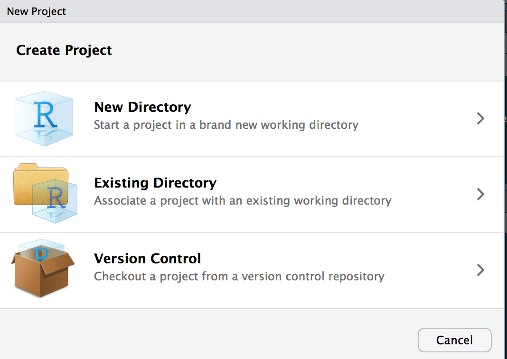
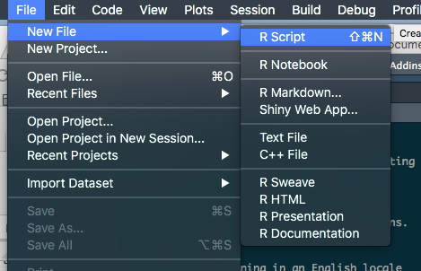

Data analysis introduction
Bill Perry
2019/10/26
Designing a project from the ground up.
Steps to consider
So the first thing to think about in my opinion is the workflow or dataflow:
- What is the source and format of your data?
- what are the variables and units and how will you name them
- controlled vocabulary list
- data structure in columns
- what are the variables and units and how will you name them
- What is the final objective and use of your data and what output?
- what is the most flexible output
- graphs
- summary statistics
- statistical analyses
- what is the most flexible output
- What is the flow of data
- source and update frequency
- QA/QC and flagging of data
- Transformations or calculations to be made
- Final data output for use - note never write to original dataframe
- Summary statistics
- Graphs
- Statistical Analyses
- Reports with markdown
- Annotate scripts and metadata
- source and update frequency
- Set up directory structure
- R Project Directory
- scripts/code
- documents
- data
- figures / output
- finalized_data
- R Project Directory
Data Source Format
Controlled vocabulary and units
Thinking about your data source first is important. Using a controlled vocabulary that references names of variables the same from project to project is critical. Defining these in a metadata document with the vocabulary and the units for each term so that future users can figure out what your codes mean is also useful.
Variable names
As part of controlled vocabulary, the way you type the variable names is also important and also important to be consistent. I have found snake case to be the best for me and using the package Janitor works well to fix messy file names. The main problem is variable names with spaces requires back ticks (variable name) to use them and special characters (`!@#$%^&* and u(micro) etc.) are coded differently on different operating systems and create chaos. The different styles are below:
- snake case - looks_like_this - separated by _ and all lower case and often most popular
- period separated - looks.like.this - separated by periods - may get confused with other commands
- lower camel case - looksLikeThis - ever word is capitilized after the first - often harder to type with all the shift caps
- upper camel case - LooksLikeThis - all words capitilized
- all lower case - lookslikethis - I find it messy and hard to read
the key is that you should have no spaces or special characters. If you do have spaces you use the back tick abc xyz on either side of the variable to call it.
Special characters are often coded differently in mac and pc computers and will cause more headaches than you have after St. Patricks Day.
Transformations
Keeping a list of transformations and conversions can be helpful in coding and if it is in the meta data file, you can copy the transformations out of the document and if there are mistakes people can track it down fast.
Data structure and format
R uses a column format and all the data in a column has to be of the same type. You can, however, reference data by row and column as in excel.
The most common data formats you will run into are:
- Numeric - can be double or integer but that is not as important
- Character - text fields
- Factors - displayed often as text but is as levels behind the scenes
- Date - date format or PosixLt or Date
- note this is in days since 1970-01-01 I believe
- note this is in days since 1970-01-01 I believe
- Date time - date and time format together or PosixCt
- this is in seconds since 1970-01-01 00:00:00
- this will be critical for many of you
- this is in seconds since 1970-01-01 00:00:00
Wide format original data
Typically when we enter data it is in wide format where an identifier is in the first column and the various variables are in separate columns. This is what is often easiest to enter into excel or wherever it is entered originally.
This format is often more difficult to work with in R and GGPlot so it is converted to long format where there is a column of identifiers, a column of variable names, and a column of values. The switch between these formats is often rather easy so it does not matter what format it is in.
wide format:
For the M&M data set this would look like:
Columns across the top would be:
- center - type of center - peanut or chocolate etc
- color - the outter shell color
- diameter - the size
- mass - the weight
long format:
This would condense this format to fewer columns repeating center and color and have a column called dimension and one called values. The dimension would be diameter or mass and the value woudl be the value. This is not that effective in this small data set but it invalualbe in larger data sets. It also makes summary stats and graphing easier:
- center - type of center - peanut or chocolate etc
- color - the outter shell color
- dimension - diameter or mass
- value - either the diameter or weight
Output
I find it useful to maintain a read only file of the original data and never write to this file other than the original QA/QC flagging of the data if even then. I usually read from this file and save it to the finalized data folder where the data has been cleaned formatted and basic calculations done on it.
Data Flow
It is often very helpful prior to doing any code work to think about what the final output will look like and what the original data looks like and the steps between these two points.
Project directory structure
Having a consistent project directory structure where code, data, and text is stored makes it easy to look at different directories and find what you are looking for. That is why I use the following structure. Choose what works for you and stick with it… please
Directory Listing
- r_projects
- scripts
- documents
- data
- figures or output
- final_data
Using projects in R is super useful and you don’t have to worry about setting directories (setwd(*C:)) between a mac and windows machine and all the paths are relative in there when you reference data or output directories and is the same on windows and mac.
File names
From the site File organization and best practices and Prime Hints naming files has many good practices. Of these the main theme is:
- Use a consistent naming theme
- use date_term1_term2.xxx
- no spaces or other fancy characters
- make the names human understandable
- use date_term1_term2.xxx
- Use natural ordering of files
- use date at front or somewhere so you know the version
- use logical ordering like 01_ 02_ 03_
- use date at front or somewhere so you know the version
- Avoid things like
- final thesis proposal.docx - I deal with many students and this is not helpful
Annotations and metadata files
For the love of all that is good - be sure to annotate you code using the # and whatever text helps describe the process you are doing - it will make the code easier to read and evaluate later when you are trying to figure out something really fast. You can also use it to search for code snippets as you are going along.
Metadata files that document what you are doing and why and what the various conversions and statistical transformations are can be of great use later on as well. It is often challenging to figure out what the units are in for various variables or what they actually mean.
RStudio Specifics
Installing R
So lets start installing R and R studio
R is its own program and can be retrieved from R Cran
R Studio is a program that makes the interface and usability of R easier in my opinion and can be retrieved here R Studio
When you get these installed we can load up R studio and look at the interface.
R interface
Start R studio and you should see: 
Project Setup
Now to set up a new project - this is if the directory does not exist Click: 1. File 2. New Project 
You can select New Directory or you can select existing directory - lets say you choose new directory 
For now you are doing a New Project. We will talk about Github at a later date

Interface changes only slightly - look in the upper right

Scripts
Now we can create a new script
1. File
2. New file
3. R Script

Now the interface looks like

Comment your code
You should use comments
#with text behind it to annotate the purpose of what your are doing and what is happening in the code chunk below.